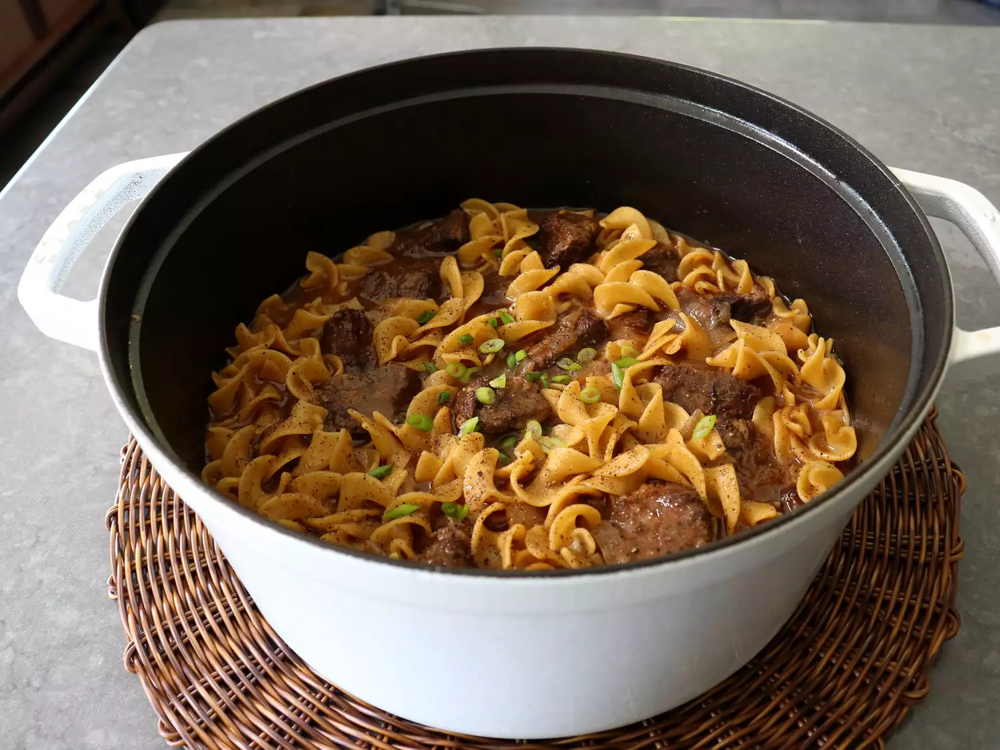

Amish Beef and Noodles

This Amish beef and noodles is a very simple dish, with very few ingredients. It's the technique that makes this comforting, satisfying, and heavenly.
By John Mitzewich
Prep Time: 15 mins
Cook Time: 2 hrs 20 mins
Total Time: 2 hrs 35 mins
Servings: 6
Ingredients
- 2 1/2 pounds beef chuck, cut into 2-inch cubes
- 2 teaspoons kosher salt
- 1 teaspoon freshly ground black pepper, plus more for the top
- 1 tablespoon vegetable oil
- 2 large yellow onions, sliced
- 2 tablespoons all-purpose flour
- 1 teaspoon garlic powder
- 1 rounded tablespoon beef bouillon paste
- 8 cups beef broth, divided
- 12 ounces large egg noodles
- sliced green onions for garnish (optional)
Directions
- Toss beef with salt and pepper until evenly coated.
- Heat vegetable oil on high heat in a Dutch oven. Brown the beef thoroughly on both sides, doing half at a time, and remove to a bowl. Turn off heat.
- Add butter to Dutch oven, along with onions and a pinch of salt. Turn heat to medium-high, and cook, stirring, until onions turn golden, about 5 minutes.
- Add flour, and cook, stirring, for 2 minutes more. Add garlic powder, beef base, and beef broth. Stir, and wait for broth to come to a boil. Add reserved beef back in.
- Stir, and cover, and reduce heat to low. Simmer until meat is very tender, about 2 hours.
- Use a strainer to remove beef to a bowl and reserve. Bring both to a boil on high heat, and add noodles. Cook, stirring, until the noodles are almost tender about 30-60 seconds less than package directions. Stir in beef and reduce heat to low.
- Once noodles are tender and beef is heated through, taste and adjust seasoning. Serve immediately topped with more freshly ground black pepper and green onions.
Nutrition Facts
Calories 514
Total Fat 17g Saturated Fat 6g Cholesterol 204mg Sodium 1854mg Total Carbohydrate 21g Dietary Fiber 1g Total Sugars 2g Protein 69g Vitamin C 2mg Calcium 68mg Iron 7mg Potassium 889mg
Home